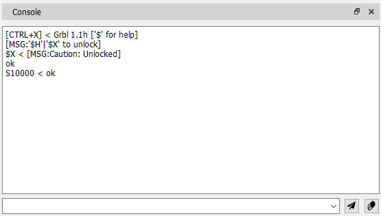

For manual CNC control, as well as for configuring and displaying controller status information, the "Console" window is provided.

At the bottom of the window there is a command‑entry field and two buttons: Send Command and Clear Console. At the top a multiline output area shows replies from the controller.
To send a command to the CNC controller, type it into the entry field and press the Enter key or click Send Command. After the controller processes the command, the command and its reply are displayed above in the following format:
Command < Response
If the program setting "Show UI commands" is enabled, all commands sent to the controller by toolbar controls will appear in the output area. When "Show G‑code program commands" is turned on, every command from the CP that is transmitted to the controller will also be shown.
The output field can be cleared by clicking Clear Console.